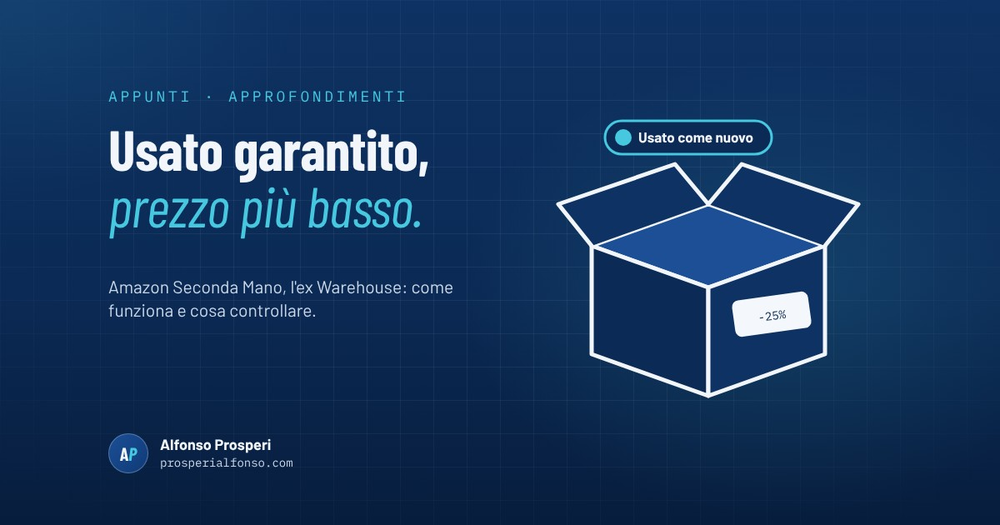

Amazon vende anche prodotti usati, verificati da lei stessa: resi dai clienti, confezioni rovinate durante il trasporto, articoli aperti e mai usati. Per anni questa sezione si è chiamata Amazon Warehouse. Dal 2023 in Italia si chiama Amazon Seconda Mano, ma il funzionamento è lo stesso.
Da dove arriva la merce
Sono soprattutto prodotti restituiti: magari il cliente ha cambiato idea, l'imballo si è danneggiato o l'oggetto non era quello che si aspettava. Non possono più essere venduti come nuovi, quindi Amazon li controlla, li classifica e li rimette in vendita a un prezzo più basso.
Le condizioni dell'usato
- Usato, come nuovo: nessun segno di utilizzo, accessori completi. Spesso cambia solo la confezione.
- Usato, ottime condizioni: piccoli segni estetici, funziona perfettamente.
- Usato, buone condizioni: segni di utilizzo più visibili o qualche accessorio non originale.
- Usato, accettabile: segni evidenti o accessori mancanti, ma il prodotto funziona. Qui ci sono gli sconti più alti.
Ogni offerta ha una breve descrizione dei difetti: leggila sempre prima di comprare.
Resi e garanzia
- Reso: vale la normale politica di reso di Amazon, quindi se il prodotto non ti convince puoi restituirlo nei tempi indicati.
- Garanzia legale: anche l'usato venduto da un'azienda è coperto dalla garanzia legale per i difetti. Per i beni usati la legge permette di ridurla, ma non sotto un anno. Controlla nella pagina del prodotto cosa è indicato.
- Ricondizionati: sono un'altra cosa. Amazon Rinnovati vende prodotti revisionati da professionisti, con una garanzia propria.
Come trovare i veri affari
- Su ogni pagina prodotto, guarda la riga delle offerte "usato" sotto il prezzo: spesso c'è un'offerta di Amazon Seconda Mano.
- Confronta il prezzo dell'usato con il prezzo del nuovo nelle ultime settimane: a volte il nuovo in offerta costa quasi uguale. Per questo è utile Keepa, che mostra anche lo storico dell'usato.
- Per prodotti delicati o che si usano a contatto con il corpo, preferisci le condizioni "come nuovo".
Per spendere bene in periodo di offerte, dai un'occhiata anche alla guida al Black Friday senza fregature.